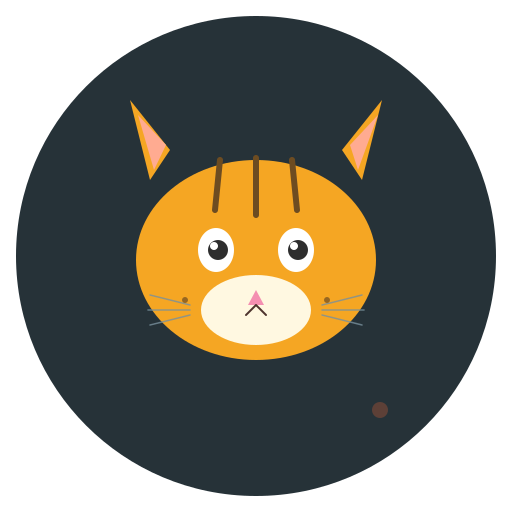

Приложение Toma · последнее обновление: 24.10.2026
Приложение не собирает персональные данные: имя, email, контакты, геолокация и другие идентифицирующие сведения не запрашиваются и не передаются.
Локально на устройстве сохраняются только игровые параметры: уровни голода, жажды, игр и энергии, уровень питомца, настройки тихих часов.
Используется реклама Яндекс Рекламной сети (РСЯ), формат Rewarded. Реклама показывается только по нажатию кнопки «Смотреть ТВ» — то есть только если пользователь сам её инициировал. Идентификатор рекламного блока: 20075569. Яндекс может получать анонимный рекламный ID устройства для подбора рекламы.
Доступ к сети нужен исключительно для загрузки рекламного контента. Без интернета игра работает полностью (кнопка ТВ просто неактивна).
SYSTEM_ALERT_WINDOW — вывод питомца поверх других приложений.POST_NOTIFICATIONS — уведомления о голоде, сне и ТВ.FOREGROUND_SERVICE — фоновая работа оверлея.INTERNET — загрузка рекламы.При удалении приложения все локальные данные удаляются автоматически операционной системой Android.
Вопросы по приложению можно задать на странице поддержки: GitHub Issues.